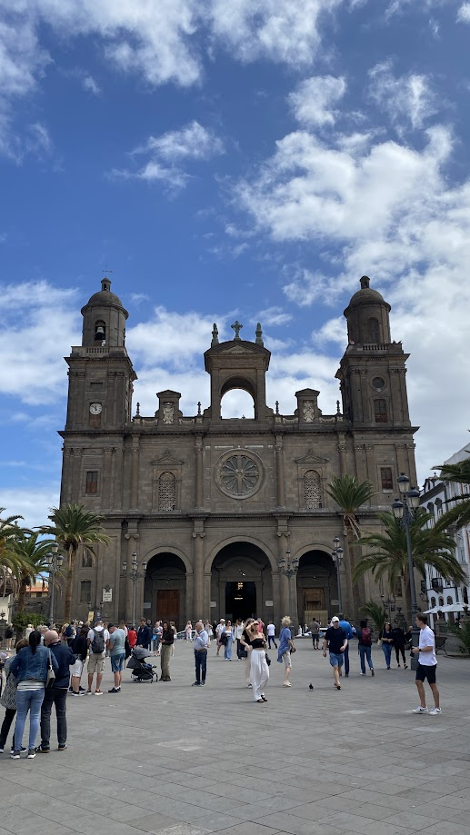
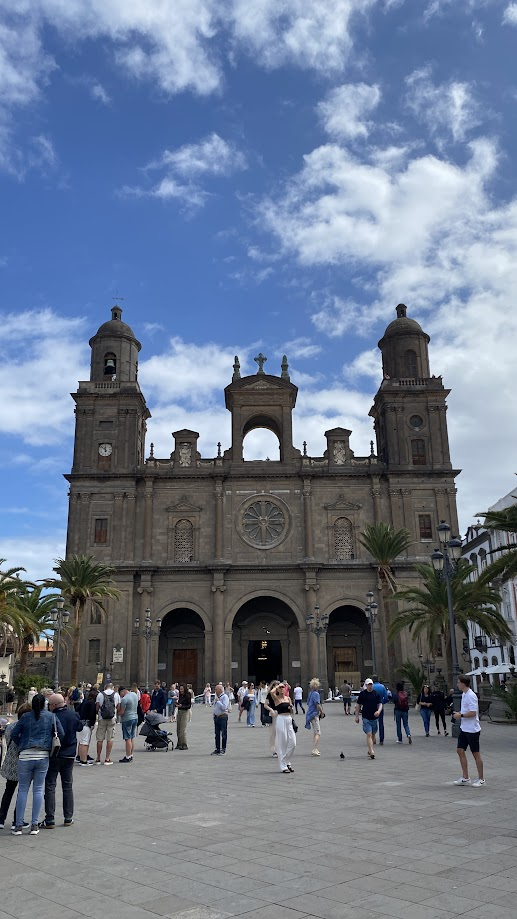
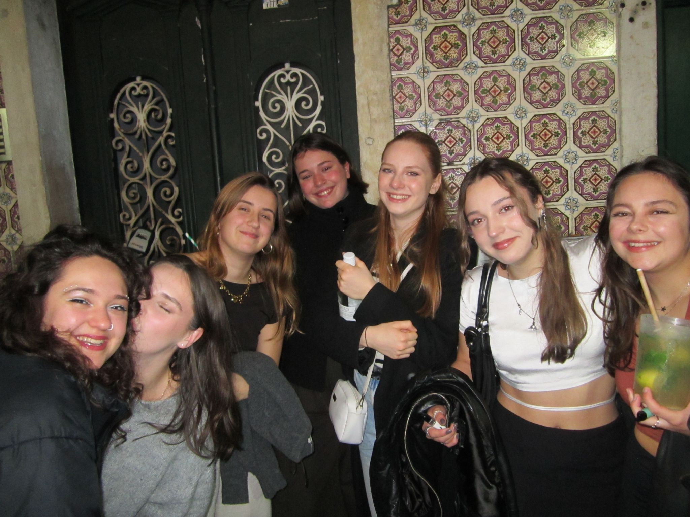
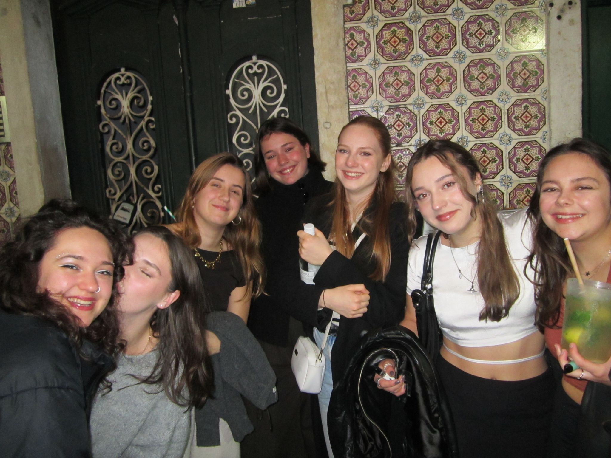

Moja Erasmus izkušnja
 Gran Canaria
Gran Canaria
 Krakow
Krakow
 Lizbona
Paphos
Lizbona
Paphos
 Berlin
Berlin
Moja Erazmus izkušnja ni bila samo študiranje. Vključevala je številna potovanja, od enodnevnih izletov po Nemčiji, do več dnevnih potovanj po celi Evropi. Spodaj si lahko ogledaš več utrinkov mojih potovanj in si prebereš več o moji izkušnji na fakulteti Universitat der Bundeswehr.
Universität der Bundeswehr, Munich
Gran Canaria
- Maspalomas Dunes
- Las Palmas City
- Roque Nublo
- Puerto de Mogán
Na Gran canario smo potovali od petega do dvanajstega marca 2025. Potovanje se je začelo z zelo zgodnjim letom in letališča Memmingen. Po 5 - urnem letu smo pristali na sončni Gran canariji. Namestili smo se v apartma in se kmalu za tem odpravili na prvo peščeno plažo. V naslednjih dnevih smo si ogledali glavne znamenistosti tega otoka, kot so peščine Maspalomas, glavno mesto Las Palmas, najvišji vrh otoka Pique de las Nives in doživeli nepozaben dan na all inclusive vožnji z ladjico.

 



Krakow
- Glavni trg (Rynek Główny)
- Wawel grad
- Barbakan
- Šehoviške ulice
- Taborišče Auschwitz
V Krakow sem potovala februarja, z mojo novo prijalteljico iz Brazilije. Fun fact, preden sva rezervirali karte za letalo sva se poznali točno en dan. Zopet sva potovali iz letališča Memmingen in popoldne pristali v Krakawu. Obe sva imeli željo bolj spoznati zgodovino vojne, zato sva večino časa obiskovali tovrstne aktivnosti. Prvi dan sva si ogledali staro mestno jedro, ki naju je popolnoma prevzelo. Naslednji dan sva imeli rezerviran ogled taborišča Auschwitz. Zagotovo bi priporočala voden ogled, saj vodiči povejo veliko zanimivosti, vendar bi si zagotovo vzeli še nekaj dodatnega časa za samostojen ogled. V naslednjih dnevih sva si ogledali še Schindlerjevo tovarno, Judovsko četrt in Wavel grad. Če ste si ogledali film Schindlerjev seznam, vam bo mesto zagotovo zanimivo, saj boste prepoznali številna mesta iz filma, kjer pa se je tudi v realnosti vse skupaj dogajalo. Izlet sva zaklučili z obiskom gradu Wavel in en kup odlične poljske hrane.


Paphos
- Arheološki park Paphos
- Stara trdnjava Paphos
- Plaža Coral Bay
- Zaliv Modre lagune
- Mozaiki v Villa of Theseus
Na Paphos sva se s fantom odpravila konec marca. Potovanje se je zopet začelo v zgodnjih jutranjih urah, iz letališča Memmingen. Na Paphosu sva pristala okoli 11. ure zjutraj in se odravila do Rent-a-car. Če si želite raziskovati otok, bi toplo priporočala, da si izposodite avto. Vendar pazite, saj vozijo po levi strani! V naslednjih dneh sva si ogledala znamenistosti otoka, kot so stara nasedla ladja (Shipwreck), številni arheološki parki in starodavna pokopališča, čudovite plaže Modre lagune in Aya Nape. Otok je najbolj znan po Afroditinih kotičkih, kot so kopališča, slapovi, Afroditine skale itd.


Lizbona
- Torre de Belém
- Kip Vasco da Gama
- Most 25. aprila
- Alfama četrt
- Trg Rossio
V Lizbono sem se odpravila januarja, skoraj takoj po novem letu. Š la sem obiskat sošolko Katjo, ki se je ravno tako udeležila Erazmus izmenjave. Tukaj sem prvič letela iz modernega Minhenskega letališča oz. prvič letela čisto sama. Katja me je pričakala na letališču v Lizboni in skupaj sva se odpravili proti njenem začasnem stanovanju. V naslednjih dvevih sva si ogledali vse glavne znamenitosti Lizbone in se podružili z njenimi novimi prijatelji. Najljubši mi je bil zadnji dan, ko sva se odpravili na znamenito plažo Capo de Roca, ki je bila naravnost neverjetna. Tam sva naredili tudi "novoletni" skok v vodo, kar se je kmalu obrestovalo kot dol prehlad - ampak je bilo vredno!


 



Berlin
- Brandenburška vrata
- Reichstag
- Muzej Pergamon
- Checkpoint Charlie
V Berlin smo se odpravili skupaj s sošolko Hano, ki se je prav tako udeležila izmenjave na
Češkem
in njenimi novimi sošolci. Jaz sem potovala tja z vlakom, imenuje se ICE - to so nemški hitri
vlaki,
ki dosežejo hitrost tudi do 300 km/h. Potovanje do Berlina mi je tako vzelo le 4 ure. V Berlinu
smo
si ogledali veliko posledic vojne, kot so Berlinski zid in številni muzeji. Berlin je zelo znan
tudi
po techno glasbi, zato smo poskušali priti v kakšnega od znanih klubov, vendar nam ni uspelo :(
Kar je res prednost v Nemčiji, da njihova karta za javni prevoz velja res po celotni Nemčiji in
vključuje
vse oblike javnega prevoza - avtobuse, podzemne vlake (U-bahn in S-bahn), trame in regionalne
vlake.